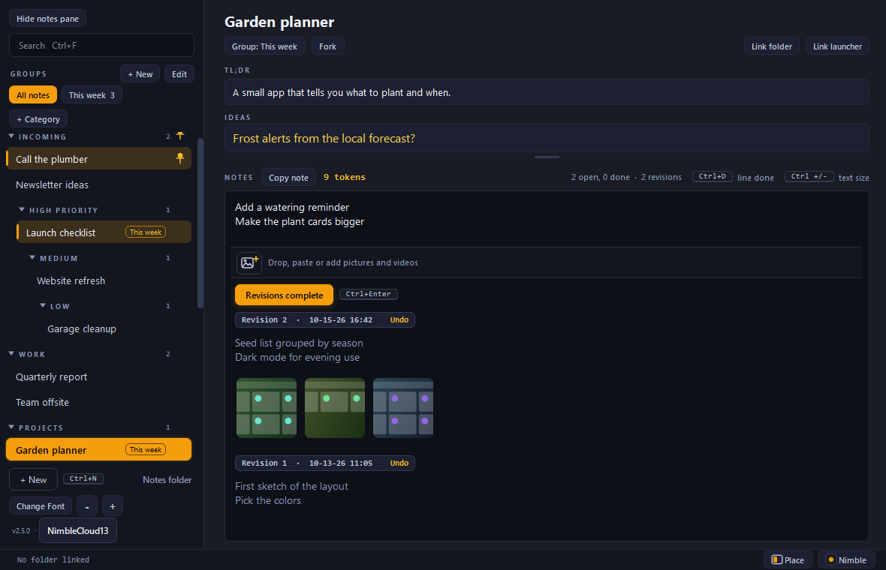

One note per project.
Always open, never in the way.
A small desktop notebook for everything you are building, planning or chasing.
about 60 MB of memoryno browser, no server
nothing leaves your PCWindows

Revisions complete
Finish a batch. Keep the history.
Type what needs doing. One click files it as a dated revision and copies it, ready to paste.
- One click (or Ctrl+Enter) greys out the batch and numbers it.
- Changed your mind? Undo reopens that revision right where it is.
Categories and groups
Folders inside folders. Fold what you are not using.
Incoming, High Priority, Medium, Low, or anything you like. Pin what matters to the top.
- Nest categories as deep as you want; a click folds a whole branch.
- Drag notes and categories anywhere, or sort them A to Z, newest, oldest.
- Pin a note or a category and it stays on top whatever the sort.
- Groups like "This week" show just the notes you are on right now.
- Amber rows still have work waiting in them.
Pictures and videos
Drop a screenshot straight into the note.
Paste, drag or add pictures and videos. They travel with the revision they belong to.
Place and Pin
Snap it to the side of your screen and leave it there.
Half, a third, a quarter, a fifth, a sixth, or a corner. Pin it and your other windows make room for it.
Fork
Try a new direction without losing the old one.
Fork copies a note, its pictures and its history, right below the original, as _v2.
Themes
Fourteen looks. Pick one by pointing at it.
Get it
Three steps, then it lives in your tray.
1. DownloadGrab the folder from GitHub.
2. install.batRun it once. It sets everything up.
3. launch_nimble_notes.batYour notes, from now on.